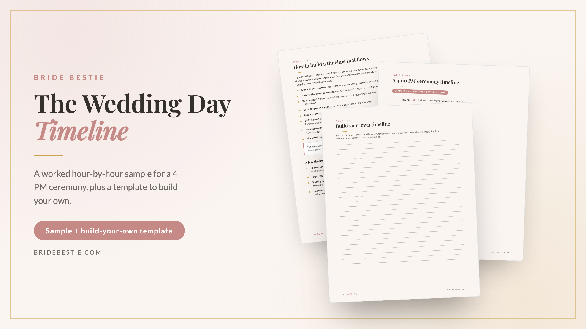

A real, hour-by-hour timeline for a 4 PM ceremony — from hair and makeup at 9 AM to the send-off at 10 — plus a blank template to map your own day and share with every vendor.
Get the timeline →
The difference between a calm wedding day and a chaotic one is usually 15-minute padding and one shared schedule. Shift the sample to match your ceremony time, fill in the template, and send it to your photographer, DJ, and coordinator so everyone is reading the same page.